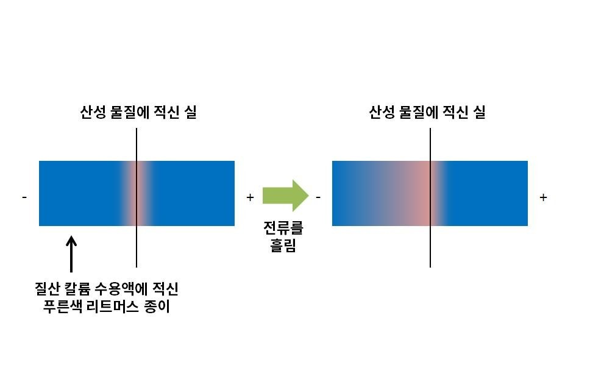
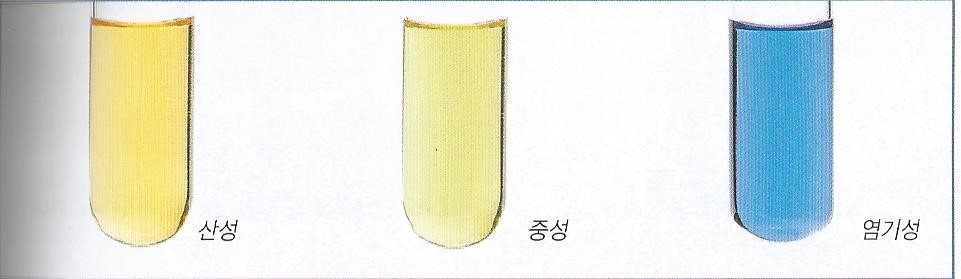
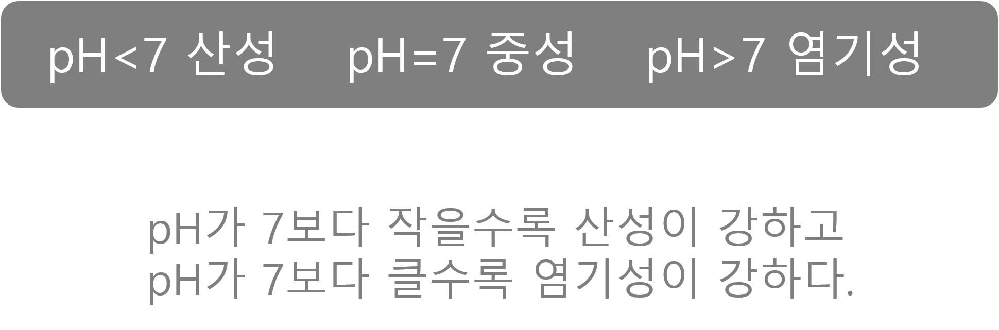

우리 주변의 산과 염기

산의 공통적인 성질을 나타내는 수소 이온
은 양이온이기 때문에 –극 쪽으로
푸른 리트머스 종이의 색이 변한다
산:물에 녹아 수소 이온을 내놓는 물질
염기:물에 녹아 수산화 이온을 내놓는 물질

지시약:산성인지 염기성인지에 따라색이 변하는 물질
페놀프탈레인 용액
메틸 오렌지 용액
BTB 용액

천연지시약:보라색 양상추나 포도,장미 등에서 추출한 용액도 산과 염기에 따라 색이 변하는 성질이 있어 지시약으로 사용가능
pH:수용액에 들어 있는 수소 이온의 농도를 숫자로 나타낸것
